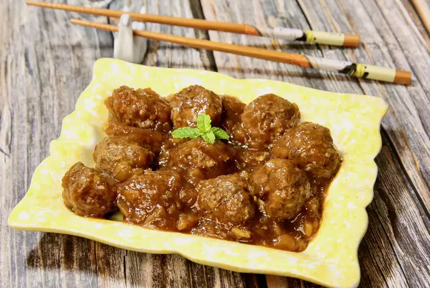

Teriyaki Meatballs

Teriyaki Meatballs
An easy and delicious twist on meatballs! These teriyaki meatballs can be served over rice, or pasta, or even a chewy French bread roll for sub sandwiches.
Ingredients
- 1 pound ground beef
- 1/4 cup bread crumbs
- 3 tablespoons soy sauce
- 2 tablespoons brown sugar
- 2 tablespoons garlic, minced
- 2 large eggwhites